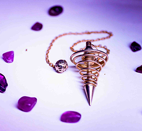

编程版块 本体还是程序员呐 正在不断学习的小白帽，主要分享自己的学习经历。另外在站点工具中有着自己编写的闯关游戏，欢迎打赏... 占卜版块 占卜？可以哦~ 前排提供塔罗占卜和灵摆占卜，自己看了很多书，也在中塔修炼过一番，其他技能还在慢慢点通，另外还会更新一些鸡汤（如果烧包他有空的话）... 摄影版块 欢迎来约片~~ 此外还是个反君的说，二次元拍的多一些，当然三次元的话也想尝试一下，除了更新照片之外，还会更新一些文案哦~